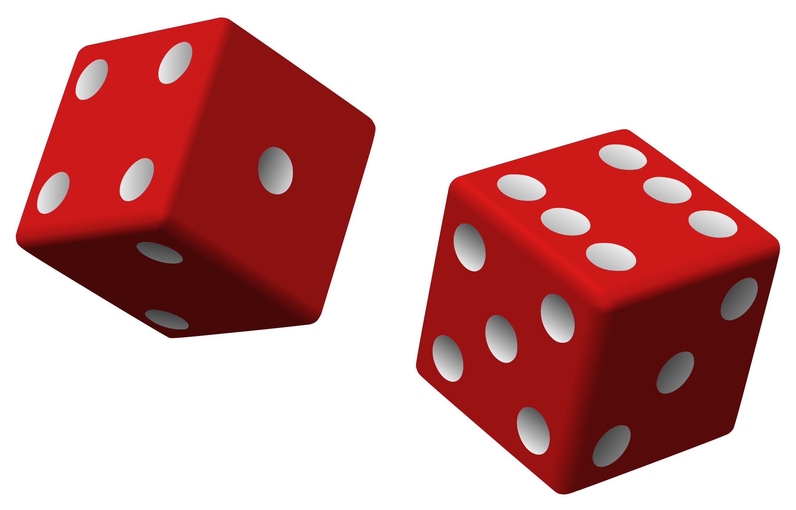

What is Production?
Definition: The Production phase of the project is the longest phase of developing a game and is when a studio transforms the concepts created during pre-production into game assets and source code for video games.
Since this phase of production is where the game actually gets made, there are a variety of different tasks that need to get done. Below you will find different areas of expertise when producing a game.
|
Prototyping Summary: The process of developing small games to test before working on their final designs |
Artwork 
Summary: The process of creating artwork for a game. |
Audio Design
Summary: The process of creating sounds for a game. |
Programming
Summary: The process of implementing code to make the game run.
|